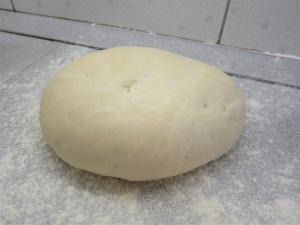
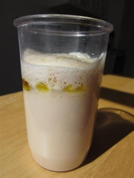
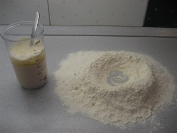
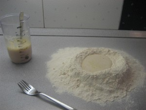
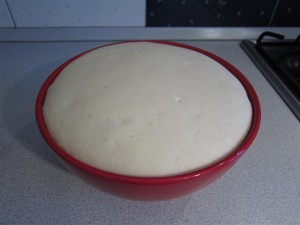

A pizza tésztája
Az igazi, olasz pizzatészta recept nem tartalmaz mást, mint a liszt-víz-olívaolaj-élesztő csapatot, egy kis sót az íze miatt, és némi cukrot az élesztő könnyebb felfuttatásához. Az itt megadott arányban keverve csodálatosan ropogósra sül az otthoni sütőben is, és könnyen formázható lesz, ami elsődleges szempont a pizza készítésénél. Az itt megadott mennyiségből két db, 34-36 cm-es, vagy 4 db 24-26 cm-es, vékony tésztás pizza készíthető. Ez a mennyiség tapasztalatom szerint salátával, desszerttel akár négy felnőttnek is elegendő lehet.

Magyar neve: Pizzatészta recept
Olasz neve: Pasta per la pizza
Származás: Olaszország
Adagok száma: 2
Előkészítési idő: 20 perc
Pihentetési idő: 1 óra 30 perc
Sütési idő: 0 perc
Összesen: 1 óra 50 perc
A recept
Pizzatészta recept hozzávalók:
- 300 ml víz
- 3 evőkanál extra szűz olívaolaj
- 500 g liszt
- 2,5 dkg élesztő (fél kocka)
- 1 teáskanál cukor
- 1 teáskanál só
-
A kézmeleg vízben keverd el a cukrot és az olívaolajat, és morzsold bele az élesztőt. Hagyd néhány percig felfutni.
 -
A lisztet és a sót szitáld egy nagyobb munkapultra vagy edénybe. Formázz egy lyukat a közepébe, amibe majd az élesztős vizet öntheted.
 -
Ha az élesztő felfutott, öntsd a liszt közepébe, és egy villa segítségével lazán keverd össze. Öntsd ki a pultra ha edényben keverted, és dolgozd össze tésztagolyóvá. Dagaszd kézzel kb. 10 percig, amíg tökéletesen sima nem lesz. Az eredménynek tapintásra enyhén nedvesnek kell lennie, de egyáltalán nem szabad, hogy a kezedre tapadjon. Én úgy tudnám ezt a legjobban leírni, hogy ránézésre száraz, míg tapintásra nedves kenyértésztát csinálj.
 -
Egy nagy tálat kenj ki extra szűz olívaolajjal, és tedd bele a kidolgozott tésztát. A tetejére is önts egy kis olívaolajat, fedd be és hagyd kelni legalább egy órát langyos helyen.
 -
Ha a tészta a duplájára kelt, öntsd ki lisztezett felületre és dolgozd át. Gyúrd néhány percig, amíg a levegőt kinyomkodod belőle. Utána vágd pizzányi darabokra, nagyjából 250 g lisztenként számolhatsz egy normál méretű pizzával. Ezeket a darabokat egyenként még gyúrd át egy kicsit, majd formázz a tenyered alatt görgetve gombócokat belőle. A lényeg, hogy sima legyen minden oldala a tésztagombócnak, ne maradjanak meg benne a hajtások nyomai, így lesz könnyű megformázni.
- Lisztezett felületen, letakarva keleszd a gombócokat még negyed órát. Ha nem használod fel azonnal, fóliába csomagolva néhány napig akár hűtőben is eltartható.